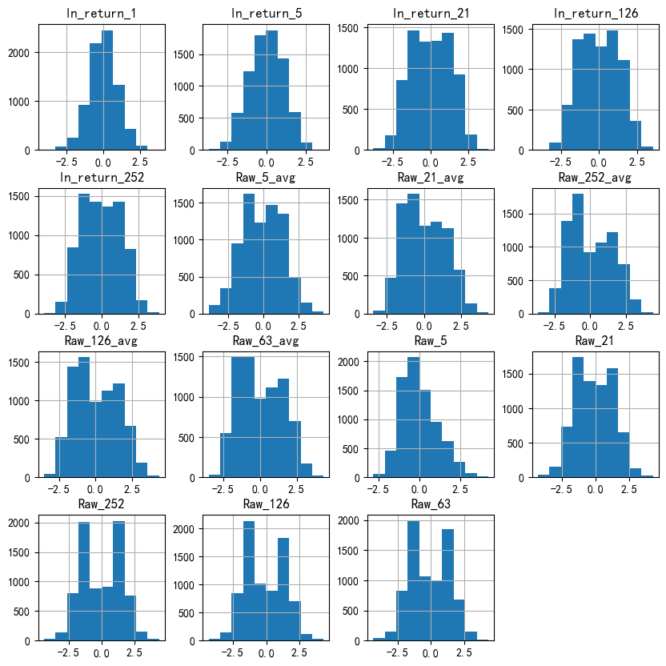
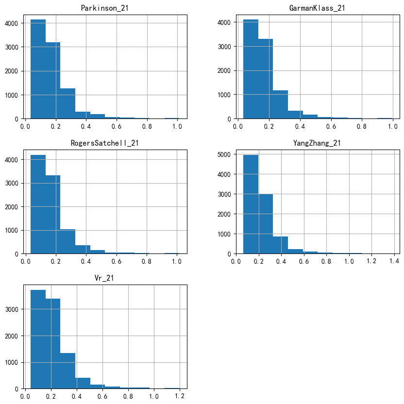
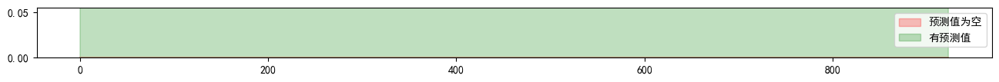
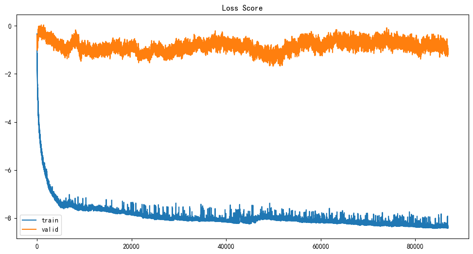
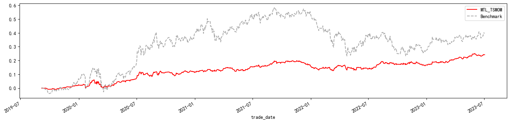

传统动量策略#
其中: \(r^{i}_{t-252,t}\)为资产i,t时刻过去一年的收益率;\(r^{i}_{t,t+1}\)为资产i,t时刻的收益率;\(\sigma_{tgt}\)目标年化波动率;\(\sigma^{i}_{t}\)资产i的历史波动率,计算窗口期为60日,使用指数衰减权重计算。
最终资产组合可以表达为: $\(r^{TSMOM}_{t,t+1}=\frac{1}{S_t}\sum^{S_t}_{i=1}r^{TSMOM,i}_{t,t+1} \tag{3}\)$
其中:\(S_t\)为组合在t时刻的标的数量
模型架构#

时序动量组合#
从上文的基于目标波动率的传统时序动量策略可以看出,确定每只股票权重有两个因素:动量的方向和股票的波动率。在主要任务钟,我们直接预测股票权重,那么组合的收益率就由上面的上式变为以下等式: $\(r^{\rho}_{t,t+1}=\frac{\sigma_{tgt}}{S_t}\sum^{S_t}_{i=1}\omega^{i}_{t-1,t}r^{i}_{t,t+1} \tag{4}\)$
为了控制交易换手,加入惩罚项:
其中:\(\tau\)为交易手续费,默认设置为3bps,\(|\omega^{i}_{t-1,t}-\omega^{i}_{t-2,t-1}|\)为资产组合S在t时刻到t+1时刻的权重变化
目标函数(损失函数): $\(L_{SharpeRatio}=-\frac{\mathbb{E}[r^{\rho}]}{\sigma_{r^{\rho}}} \tag{6}\)$
特征生成#
Close-to-close volatility estimator,\(\sigma_{ctc}\)
Parkinson volatility estimator, \(\sigma_{\rho}\) (Parkinson, 1980)
Garman-Klass volatility estimator, \(\sigma_{gk}\) (Garman & Klass, 1980)
Rogers-Satchell volatility estimator, \(\sigma_{rs}\) (Rogers & Satchell, 1991)
Yang-Zhang volatility estimator, \(\sigma_{yz}\) (Yang & Zhang, 2000)
公式#
公式参考:
Exploring the predictability of range-based volatility estimators using RNNs
Close-to-close volatility:\(\sqrt{\frac{1}{N-1}\sum^{T}_{i=1}(ln(\frac{c_i}{c_{i-1}}-\overline{\frac{c_t}{c_{t-1}}})^2)}\)
Parkinson volatility:\(\sqrt{\frac{1}{4Tln2}\sum^{T}_{i=1}(ln\frac{h_{i}}{l_{i}})^2}\)
Garman-Klass Volatility:\(\sqrt{\frac{1}{T}\sum^{T}_{i=1}(0.5*ln(\frac{h_{i}}{l_{i}})^2-(2ln(2)-1)ln(\frac{c_i}{o_{i}})^2)}\)
Rogers-Satchell Volatility:\(\sqrt{\frac{1}{T}\sum^{T}_{i=1}(ln(\frac{h_i}{o_i})(ln(\frac{h_i}{o_i})-ln(\frac{c_i}{o_i}))+ln(\frac{l_i}{o_i})(ln(\frac{l_i}{o_i})-ln(\frac{c_i}{o_i}))}\)
Yang-Zhang volatility:
\(\sqrt{\frac{1}{N-1}\sum^{T}_{i=1}(ln(\frac{o_i}{c_{i-1}})-\overline{ln(\frac{o_i}{c_{i-1}})})^2+\frac{k}{N-1}\sum^{T}_{i=1}(ln(\frac{c_i}{o_{i-1}})-\overline{ln(\frac{c_i}{o_{i-1}})})^2+(1-k)V_{RS}}\)
其中: \(k=\frac{0.34}{1.34+\frac{N+1}{N-1}}\)
\(V_{RS}=\frac{1}{N}\sum^{N}_{i=1}(ln(\frac{h_i}{o_i})(ln(\frac{h_i}{o_i})-ln(\frac{c_i}{o_i}))+ln(\frac{l_i}{o_i})(ln(\frac{l_i}{o_i})-ln(\frac{c_i}{o_i})))\)
\(o_{i},c_{i},h_{i},l_{i}\)分别为i时刻的OHLC数据
特征部分的损失函数就是最小化已实现波动率与预测波动率之间的负相关系数: $\(L_{corr(y,\hat{y})}=-\frac{S_{y,\hat{y}}}{S_{y}*S_{\hat{y}}} \tag{7}\)$
整体任务的损失函数
其中\(\mu\)和\(\lambda\)为权重,取值在[0,1]之间,\(\mu+\lambda=1\),这里进行简单处理\(\mu=0.5,\lambda=0.5\)
from typing import Dict
import empyrical as ep
import matplotlib.pyplot as plt
import numpy as np
import pandas as pd
from src.core import MTL_TSMOM
from src.general import get_backtest_metrics
from src.data_processor import DataProcessor
plt.rcParams["font.sans-serif"] = ["simhei"] # 解决中文乱码
plt.rcParams["axes.unicode_minus"] = False
数据读取#
这里我们使用的标的为:黄金ETF(518880.SH)、纳指ETF(513100.SH)、创业板ETF(159915.SZ)、沪深300ETF(510300.SH),时间范围2014-01-01至2023-08-02,价格数据后复权; 测试时未来收益率我们使用的Open-to-Open(OTO)因为是T日预测的权重用于T+1,OTO计算是\(ln(Open_{t+2}/Open_{t+1})\)
test_size: int = 1 # 测试集
basic_rate: float = 0.6 # 训练集占比
standardize_window: int = 21 # 标准化窗口
vol_forward_window: int = 21 # 预测未来波动率的窗口
dataset = DataProcessor()
dataset.generate(
standardize_window=standardize_window,
vol_forward_window=vol_forward_window,
vol_method="CTC", # vr波动使用CTC计算
return_method="OTO", # return使用OTO计算
)
dataset.build_dataset(test_size=test_size, valid_ratio=0.2, base_ratio=basic_rate)
TimeSeriesSplit(gap=0, max_train_size=None, n_splits=924, test_size=1)
total_szie: int = dataset.frame.index.levels[1].size
print(
f"时间序列长度{total_szie},起始长度{basic_rate*100}%,基础长度为{int(total_szie*basic_rate)},n_splits为{(total_szie*(1-basic_rate))//test_size}"
)
时间序列长度2311,起始长度60.0%,基础长度为1386,n_splits为924.0
dataset.frame['features_fields'].dropna().hist(figsize=(10, 10));

dataset.frame['auxiliary_fields'].dropna().hist(figsize=(10, 10));

lr: float = 0.001
params: Dict = dict(
dataset=dataset,
input_size=15, # 特征维度
lstm_hidden_size=64,
mlp_hidden_size=128,
lstm_layers=2,
mlp_layers=3,
lstm_dropout=0.2,
mlp_dropout=0.05,
max_grad_norm=0.1,
num_epochs=200,
transcation_cost=0.0003, # 交易成本
target_vol=1, # 目标波动率
early_stopping=50,
optimizer_name="Adam", # 优化器
opt_kwargs=dict(lr=lr), # 优化器参数
verbose=False,
)
# 预测的权重及未来的OTO收益
mtl_tsmom = MTL_TSMOM(**params)
mtl_tsmom.fit()
train: 100%|██████████| 924/924 [17:01<00:00, 1.11s/it]
# 检查是否有数据缺失
loss_score_frame: pd.DataFrame = mtl_tsmom.plot_pred_nan_num()
loss_score_frame.plot(title="loss_score")
[]

mtl_tsmom.get_loss_score().plot(figsize=(12, 6), title="Loss Score")
<Axes: title={'center': 'Loss Score'}>

strategy_frame: pd.DataFrame = mtl_tsmom.get_backtest_returns()
strategy_cum: pd.DataFrame = ep.cum_returns(strategy_frame)
ax = strategy_cum.plot(figsize=(18, 4), y="MTL_TSMOM", color="r")
strategy_cum.plot(ax=ax, y="Benchmark", label="Benchmark", ls="--", color="darkgray")
plt.legend()
<matplotlib.legend.Legend at 0x213b74bb7c0>

strategy_frame.apply(lambda x: get_backtest_metrics(x)["metrics"])
| MTL_TSMOM | Benchmark | |
|---|---|---|
| Annualized Return | 0.060920 | 0.095707 |
| Cumulative Return | 0.242135 | 0.398124 |
| Annualized Sharpe Ratio | 1.036115 | 0.617428 |
| Annualized Sortino Ratio | 1.554689 | 0.869483 |
| Max Drawdown | -0.060737 | -0.221324 |
| Annualized volatility | 0.058745 | 0.172100 |
超参#
寻参空间

from src.optimize_multi_model import optimize_multi_hyperparameters
study = optimize_multi_hyperparameters(dataset,batch_size=200,early_stopping=50,target_vol=0.5,n_trials=20)
[I 2023-08-08 21:45:33,747] A new study created in memory with name: no-name-acfc88e5-cc6c-4a98-9631-e3b0cbcfbf3d
[I 2023-08-08 22:13:39,039] Trial 0 finished with value: 0.17481300234794617 and parameters: {'lstm_layers': 4, 'mpl_layers': 2, 'hidden_size': 128, 'ff_hidden_size': 128, 'lstm_dropout': 0.05, 'mpl_dropout': 0.2, 'max_grad_norm': 0.0, 'lr': 0.1, 'optimizer': 'Adam'}. Best is trial 0 with value: 0.17481300234794617.
d:\anaconda3\envs\qlib_env\lib\site-packages\torch\nn\modules\rnn.py:71: UserWarning: dropout option adds dropout after all but last recurrent layer, so non-zero dropout expects num_layers greater than 1, but got dropout=0.05 and num_layers=1
warnings.warn("dropout option adds dropout after all but last "
[I 2023-08-08 22:36:55,598] Trial 1 finished with value: -0.1423977017402649 and parameters: {'lstm_layers': 1, 'mpl_layers': 4, 'hidden_size': 64, 'ff_hidden_size': 64, 'lstm_dropout': 0.05, 'mpl_dropout': 0.05, 'max_grad_norm': 0.0, 'lr': 0.0001, 'optimizer': 'SGD'}. Best is trial 1 with value: -0.1423977017402649.
[I 2023-08-08 23:09:43,374] Trial 2 finished with value: 0.06650356948375702 and parameters: {'lstm_layers': 4, 'mpl_layers': 4, 'hidden_size': 128, 'ff_hidden_size': 256, 'lstm_dropout': 0.15, 'mpl_dropout': 0.1, 'max_grad_norm': 0.01, 'lr': 0.01, 'optimizer': 'SGD'}. Best is trial 1 with value: -0.1423977017402649.
[I 2023-08-08 23:35:49,296] Trial 3 finished with value: -0.4661749601364136 and parameters: {'lstm_layers': 3, 'mpl_layers': 4, 'hidden_size': 64, 'ff_hidden_size': 64, 'lstm_dropout': 0.2, 'mpl_dropout': 0.1, 'max_grad_norm': 0.01, 'lr': 0.01, 'optimizer': 'SGD'}. Best is trial 3 with value: -0.4661749601364136.
[I 2023-08-09 00:07:00,946] Trial 4 finished with value: -0.6393474340438843 and parameters: {'lstm_layers': 2, 'mpl_layers': 2, 'hidden_size': 256, 'ff_hidden_size': 256, 'lstm_dropout': 0.1, 'mpl_dropout': 0.1, 'max_grad_norm': 0.1, 'lr': 0.1, 'optimizer': 'SGD'}. Best is trial 4 with value: -0.6393474340438843.
[I 2023-08-09 00:07:02,040] Trial 5 pruned.
[I 2023-08-09 00:07:03,314] Trial 6 pruned.
[I 2023-08-09 00:07:04,900] Trial 7 pruned.
[I 2023-08-09 00:07:08,072] Trial 8 pruned.
[I 2023-08-09 00:44:34,910] Trial 9 finished with value: -0.7249398231506348 and parameters: {'lstm_layers': 4, 'mpl_layers': 4, 'hidden_size': 128, 'ff_hidden_size': 128, 'lstm_dropout': 0.2, 'mpl_dropout': 0.1, 'max_grad_norm': 0.1, 'lr': 0.001, 'optimizer': 'Adam'}. Best is trial 9 with value: -0.7249398231506348.
[I 2023-08-09 01:10:02,889] Trial 10 finished with value: -0.7745277881622314 and parameters: {'lstm_layers': 4, 'mpl_layers': 1, 'hidden_size': 32, 'ff_hidden_size': 32, 'lstm_dropout': 0.2, 'mpl_dropout': 0.05, 'max_grad_norm': 0.1, 'lr': 0.001, 'optimizer': 'Adam'}. Best is trial 10 with value: -0.7745277881622314.
[I 2023-08-09 01:37:18,392] Trial 11 finished with value: -0.7144525051116943 and parameters: {'lstm_layers': 4, 'mpl_layers': 1, 'hidden_size': 32, 'ff_hidden_size': 32, 'lstm_dropout': 0.2, 'mpl_dropout': 0.05, 'max_grad_norm': 0.1, 'lr': 0.001, 'optimizer': 'Adam'}. Best is trial 10 with value: -0.7745277881622314.
[I 2023-08-09 02:04:17,435] Trial 12 finished with value: -0.3324850797653198 and parameters: {'lstm_layers': 4, 'mpl_layers': 1, 'hidden_size': 32, 'ff_hidden_size': 32, 'lstm_dropout': 0.2, 'mpl_dropout': 0.05, 'max_grad_norm': 0.1, 'lr': 0.001, 'optimizer': 'Adam'}. Best is trial 10 with value: -0.7745277881622314.
[I 2023-08-09 02:06:53,710] Trial 13 pruned.
[I 2023-08-09 02:40:13,545] Trial 14 finished with value: -0.1618010401725769 and parameters: {'lstm_layers': 4, 'mpl_layers': 3, 'hidden_size': 32, 'ff_hidden_size': 32, 'lstm_dropout': 0.15, 'mpl_dropout': 0.1, 'max_grad_norm': 0.1, 'lr': 0.001, 'optimizer': 'Adam'}. Best is trial 10 with value: -0.7745277881622314.
[I 2023-08-09 02:41:40,448] Trial 15 pruned.
[I 2023-08-09 03:10:43,914] Trial 16 finished with value: -0.39310985803604126 and parameters: {'lstm_layers': 2, 'mpl_layers': 3, 'hidden_size': 32, 'ff_hidden_size': 32, 'lstm_dropout': 0.2, 'mpl_dropout': 0.2, 'max_grad_norm': 0.1, 'lr': 0.001, 'optimizer': 'Adam'}. Best is trial 10 with value: -0.7745277881622314.
[I 2023-08-09 03:10:46,211] Trial 17 pruned.
[I 2023-08-09 03:47:42,677] Trial 18 finished with value: -0.6571537256240845 and parameters: {'lstm_layers': 4, 'mpl_layers': 1, 'hidden_size': 256, 'ff_hidden_size': 32, 'lstm_dropout': 0.15, 'mpl_dropout': 0.05, 'max_grad_norm': 0.1, 'lr': 0.0001, 'optimizer': 'Adam'}. Best is trial 10 with value: -0.7745277881622314.
[I 2023-08-09 03:47:45,484] Trial 19 pruned.
best_params:
{'lstm_layers': 4, 'mpl_layers': 1, 'hidden_size': 32, 'ff_hidden_size': 32, 'lstm_dropout': 0.2, 'mpl_dropout': 0.05, 'max_grad_norm': 0.1, 'lr': 0.001, 'optimizer': 'Adam'}
study.best_trial.params
{'lstm_layers': 4,
'mpl_layers': 1,
'hidden_size': 32,
'ff_hidden_size': 32,
'lstm_dropout': 0.2,
'mpl_dropout': 0.05,
'max_grad_norm': 0.1,
'lr': 0.001,
'optimizer': 'Adam'}